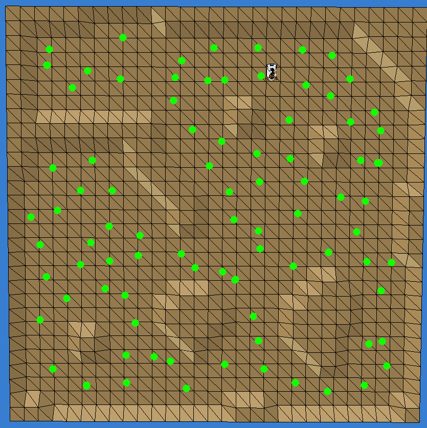
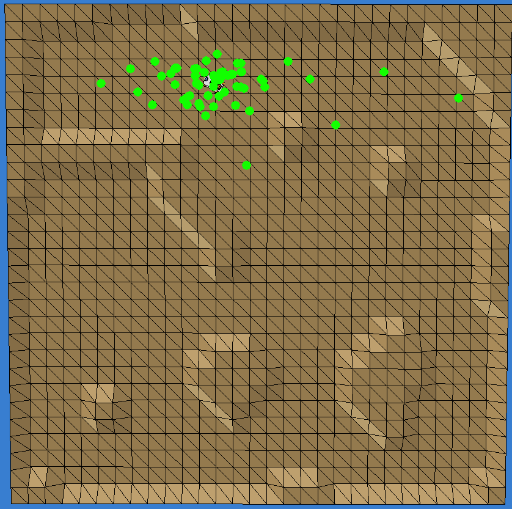

Description
The goal of the third EMOR tutorial is to write a program enabling youBot to localize itself with the use of particle filter. This task is broken into two subproblems:
- generation of random, yet collision-less trajectory
- implementation of the particle filter-based localization, executed for each of subsequent robot poses
- detect the wall and avoid collisions
- update the set of particles, each representing a possible (single) robot pose in the form of [x;y;orientation]
Similarly to the previous tutorial, you should write your program on the basis of exercise03.m script, by modifying the section between the
% EMOR exercise begin and % EMOR exercise end comments.
And analogically, we also prepared a simulation environment in V-REP stored in file exercise03.ttt.
You must run it before running your matlab script.
Task requirements - generation of trajectory
You should write a program that:- Moves the robot ahead (i.e. along the same orientation) until some of obstacles are near (e.g. in a distance smaller than 0.5m)
- Randomly selects new the orientation (e.g. from (30, 330) degrees)
- Rotates the robot so his orientation is the same as the randomly chosen one and starts to move ahead (enters the state from the first point)
Task requirements - particle filter
On the basis of the program generating the random trajectory you should write a program that:- Initialize a set of particles (e.g. a size of 1000), each containing a random robot pose [x;y;orientation]
- A function responsible for moving "the robot" - aside of moving the real robot it should update the particle poses one by one by a given pose increment (x,y,orientation) with additional noise (gaussian noise with mean equal to zero and small variance)
- A function that updates the measurements by computing their gaussian distribution on the basis of distance (d) of the given measurement (x,y), i.e. x and y become in fact a mean_x and mean_y, whereas the variances sigma_x and sigma_y depend on the distance (bigger distance imposes bigger variances)
- A function that calculates the "importance weight" of each particle on the basis of mismatch between the actual measurements (i.e. readings from the Hokuyo lidars) and the predicted measurements
Grading
- Generation of trajectory (3p), including:
- Moving the robot ahead until an obstacle enters the "dangerous zone" (2p)
- Random selection of new orientation and rotating the robot (1p)
- Particle filter (10p), including
- Initialize a set of particles (1p)
- Visualize particles (1p)
Important: You must modify only the indicated section of the exercise03.m script. Modification of other parts of the code are forbidden and will result in zero points from the project.
Programming hints
The motion of the robot should be controlled by variables representing the relative velocities:forwBackVel- linear velocity along the x axis of the robot [m/s]leftRightVel- linear velocity along the y axis of the robot [m/s]rotVel- angular velocity around the z axis of the robot [rad/s]
pts- a table containing readings i.e. contact points, in sensor's coordinates, each expressed as [x;y;z]contacts- a table of values <0/1> determining whether an obstactle was detected or the reading corresponds to the maximal sensor range (in this case it is set to 5m)

